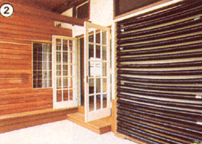
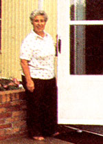
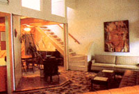
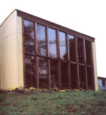
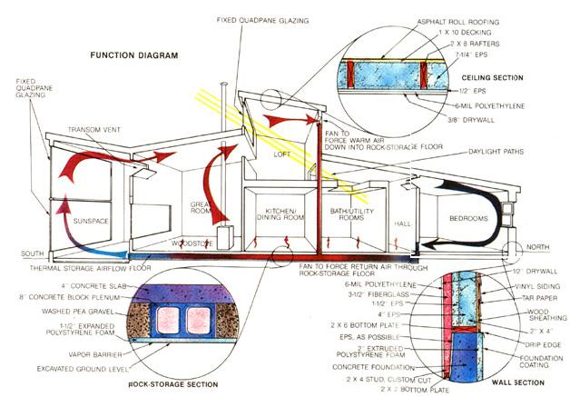

A self-styled freelance futurist, Sister Paula Gonzalez, has brought together 35 friends to accomplish the improbable:
April 29, 1985
Gentlepersons,
In late August 1982, the first meeting of volunteers for this "Saturday project" came together to hear my plan for converting an old frame farm building into a future-sustainable home. In the course of three years, some 35 people have been involved in one way or another, for longer or shorter stints. (Jerry Ropp, our de facto foreman, hasn't missed a single Saturday since that first meeting.)
All materials for the house you see in the pictures were either [1] recycled, [2] purchased using money made from recycling-especially yard and clothing sales but also some metal salvage-or [3] donated. I don't have detailed cost figures at this point (since I'm not only the bookkeeper but also the orderer, general contractor, soup maker, and apprentice plumber, tiler, carpenter, drywall finisher, etc.), but I do know that we've raised about $12,000 or $13,000 and still have $500 in the bank. That means that in anyone's dollars, the 1,500-square-foot, superinsulated, passive-solar house that Sister Mary Bookser and I now live in-I call it La Casa del Sol, "the house of the sun"-cost less than $10 per square foot to build. What's more, our all-electric residence used less than 500 kwh of power (and a few construction scraps in the woodstove) in February of this year.
Peace!
Sister Paula Gonzalez Sisters of Charity 5820 Bender Rd. Mount St. Joseph, OH 45061
These are just a few choice excerpts from a letter we received from Sister Paula Gonzalez in response to the announcement of our LowCost HomeBuilding Contest (see page 90). We were impressed by what Sister Paula described, but the entry also posed a problem. How would we equate the costs of a completely recycled house built entirely with volunteer labor to those of others constucted by even remotely conventional means? It would be a classic case of trying to compare apples to oranges.
For this and other reasons-just for starters, we wondered what a sister-Ph.D. cell biologistprofessor was doing building a passive solar house-we decided that La Casa del Sol ought to have a feature article unto itself. The more we heard and saw, the more fascinating the tale became.
Sisters of Charity at Mount St. Joseph, near Cincinnati, was founded by St. Elizabeth Ann Seton, who aptly described the spirit of La Casa del Sol when she said, "Live simply, that others may simply live." La Casa's founder, Sister Paula, believes that much of the current world strife can be attributed to the attempts by some to maintain (or achieve) a lifestyle that our planet can't (and doesn't) support-at least not for all 4.7 billion onus. She asks, "What might happen if, instead of fighting (all the way up to nuclear war) to extend the `good old days' of the petroleum era, we began to tap our boundless creativity and imagination to design the `better new days'?" La Casa is where the words stop and action takes over.
La Casa del Sol could loosely be called a retrofit, in that it incorporates the frame of one end of an agricultural building. Its 1,500 square feet extend well beyond the front of that humble structure (a former chicken barn for Mount St. Joseph College), and even the original concrete floor was chiseled away (by hand) to make room for a subfloor solar storage system.
The function diagram should give you an idea of how the house works thermally. Most of the solar energy is captured through about 250 square feet of quadruple-insulated glass in the sunspace. Some of this heat is stored directly in the concrete (and soon to be quarrytile-covered) floor of the sunspace and great room (the two rooms are connected by French doors). At the same time, air heated in the sunspace rises to pass through transom vents into the great room and loft area.
Another 96 square feet of Quadpane glass in a loft clerestory contributes to the solar input. From the loft, some of the heated air is drawn down by a fan into a rock-storage floor: a heatstorage system consisting of washed pea gravel and concrete blocks lying on their sides, which function as plenums, as shown in the detail of the rock-storage section. The remainder continues its convective path through a passage above the bath and utility room area, into the east-west hallway, and through transom vents above the bedroom doors. The return path to the sunspace is through the air floor, with an extra push by another fan. Heat stored in the floor rises into the living spaces above.
How well does all this work? In the fall and spring, very well indeed. But the Cincinnati area can expect only five clear days per month from December through March. During the winter months, La Casa del Sol depends heavily on its highly insulated exterior to hold what little heat is gained from the sun.
A typical wall section (see the detail) is double framed with true 2" X 4" planks as well as 2" X 4" dimensional lumber and contains a total of 5-1/2" of expanded polystyrene (EPS) and another 3-1/2" of fiberglass-for a total R-value of about 32. Ceilings are framed with 2 X 8s, filled with 7-1/4" EPS, with another 1/2" of EPS used between the drywall and the raftersfor a total R-value of at least 32. Below-grade portions of the building have 2" extruded polystyrene on the outside, a layer of EPS on the inside, and a 2 X 4 wall with 3-1/2" of fiberglass inside that. The air floor is insulated with 1-1/2" EPS. The entire building is lined with a 6-mil polyethylene vapor/air barrier, which-when combined with careful caulking and air lock entries with insulated doors and magnetic gaskets-should keep the air-change rate down to less than 1/2 per hour.
Recognizing that conservation would be more important than sheer solar input, Sister Paula specified Quadpane glazing for the sunspace and clerestory. Though two layers of glass and two of Dow Sungain film transmit 25% less solar energy than conventional double-pane windows would have, they lose less than half as much heat-a worthwhile tradeoff. All other windows in the house are double pane with night insulation, and even the Quadpane clerestory glazing is fitted with a quilted window shade.
La Casa is so well insulated and so tight that when the mercury dropped to an all-time record low of -21 °F (with a windchill of -64°F) on a night after a completely overcast day in March of 1985, the interior temperature settled at 50°F with no backup heat.
That same evening, the sunspace bottomed out at 38°F, and the geraniums continued blooming merrily. Normally, however, Sisters Paula and Mary switch on radiant electric heaters in the bedrooms when it gets too chilly. Once they get a catalytic combustor to clean up the emissions from their woodstove, they hope to dispense with the small electric heaters entirely.
Though La Casa del Sol receives only about 20% of its heat from the sun in January, the solar features have additional aesthetic and energy-saving benefits. The house is very well daylit, reducing the need for electric lighting. The sunspace glazing allows plenty of light into the great room, even on cloudy days, and the clerestory provides sunshine all the way to the rear hall. A particularly clever feature of the building is the design of the skylights in the bathroom. Rather than having problemprone (and expensive) roof glazing, the two-room bath area has a nonstructural ceiling that adjoins the air passage between the loft and rear hall. Light can pass through slats in the back wall of the loft and shine on diffusing glazing (made by framing recycled shower doors) in the bathroom ceiling.
Water use (and the energy required to heat it) is kept to a minimum by a number of features. All faucets are fitted with waterconserving heads, the heater is on a timer that allows three 30-minute cycles per day, and the toilet has a water-filled jug inside to reduce its flush volume. It could probably go without saying that practically all of these appliances and fixtures were recycled.
Food for the sisters comes from gardens behind the house and-once again-recycling. Sister Paula has found that an amazing amount of perfectly edible food goes to waste for nothing more than cosmetic reasons and has tapped into major produce suppliers in the Cincinnati area. Part of lunch on the day MOTHER's staff member visited was a crisp green salad made entirely of produce from the sisters' garden and Cincinnati's lettuce rejects.
This house is truly an exemplary performerat about 2.5 Btu per degree-day per square foot for auxiliary heat, it uses half the energy that a top-notch new conventional building does and between a quarter and an eighth of the norm-but its genesis is at least as important: La Casa was built for a ridiculously small amount of money, all of which was generated from the surplus produced by our wasteful (though in this case generous) society. The construction was done by volunteers, most of whom were unskilled but ably directed by Jerry Ropp and Sister Paula. They rightfully call the dwelling the result of the La Casa community's effort.
La Casa del Sol is just a first step; it shows that ecologically sensitive living is possible, and can even be delightful. Among Sister Paula's plans is the conversion of the remainder of the barn into housing units for other Sisters of Charity. And yet to come are other energy-conserving features-two passive solar hot water panels are planned, an air-to-air heat exchanger is on the list, electricity from the wind or photovoltaic panels is a possibility, and hybrid poplars for fuel are on the schedule-which will help La Casa's residents live even more lightly on the earth.
|
 |
 |
 |
|
 |
 |
|